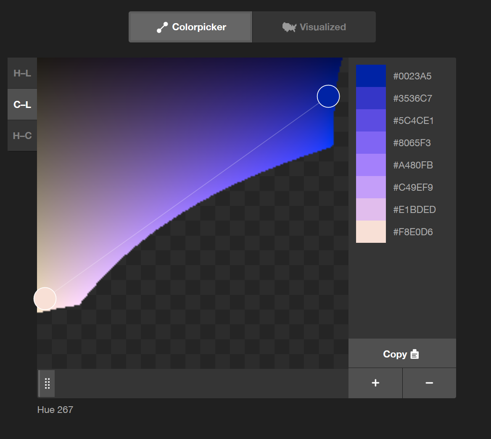
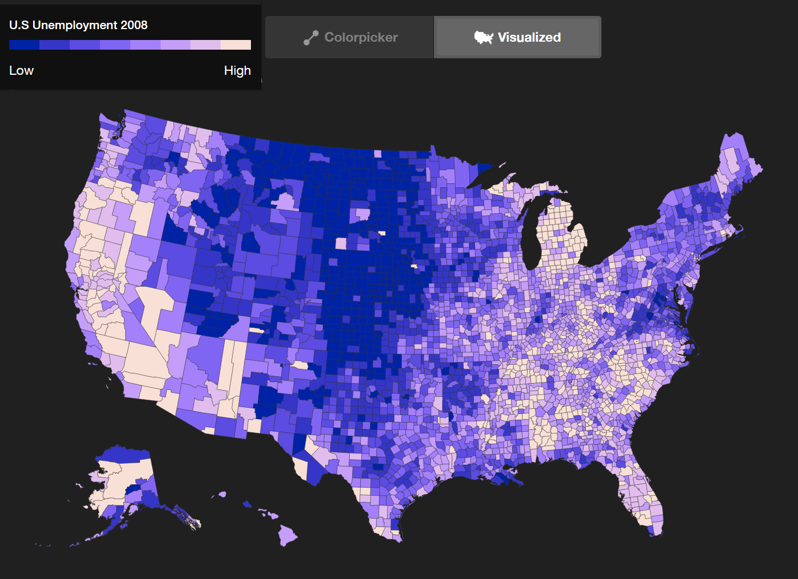

1. Introduction
This section is not normative.
This module adds the new functions contrast-color(), color-mix() and light-dark(), and extends existing ones with relative color syntax.
It also extends the color() function so that not only predefined color spaces, but also custom color spaces defined by ICC profiles (including calibrated CMYK) can be used in CSS.
It also adds device-cmyk, a representation of uncalibrated cmyk color.
2. The <color> syntax
Colors in CSS are represented by the <color> type:
<color> = <color-base> | currentColor | <system-color> |
<contrast-color()> | <device-cmyk()> | <light-dark()>
<color-base> = <hex-color> | <color-function> | <named-color> | <color-mix()> | transparent
<color-function> = <rgb()> | <rgba()> |
<hsl()> | <hsla()> | <hwb()> |
<lab()> | <lch()> | <oklab()> | <oklch()> |
<alpha()> |
<color()>
An absolute color is a <color> whose computed value has an absolute, colorimetric interpretation. This means that the value is not:
-
currentColor (which depends on the value of the color property)
-
a <system-color> (which depends on the color mode)
-
<light-dark()> (which depends on the color mode)
-
<contrast-color()> (which depends on the color mode)
-
<device-cmyk()> (which has no colorimetric basis)
Nor are any of those values used inside <color-mix()> or in relative color syntax.
The colors that resolve to sRGB are:
The functions that support legacy color syntax are:
The <hsl()>, <hsla()>, <hwb()>, <lch()>, and <oklch()> color functions are cylindrical polar color representations using a <hue> angle; the other color functions use rectangular orthogonal color representations.
3. Mixing Colors: the color-mix() Function
Web developers, design tools and design system developers often use color functions to assist in scaling the design of their component color relations. With the increasing usage of design systems that support multiple platforms and multiple user preferences, like the increased capability of Dark Mode in UI, this becomes even more useful to not need to manually set color, and to instead have a single source from which schemes are calculated.


Currently Sass, calc() on HSL values, or PostCSS is used to do this. However, preprocessors are unable to work on dynamically adjusted colors; all current solutions are restricted to the sRGB gamut and to the perceptual limitations of HSL (colors are bunched up in the color wheel, and two colors with visually different lightness, like yellow and blue, can have the same HSL lightness).
To meet this need, the color-mix() function takes a list of one or more <color> specifications and returns the result of mixing them, in a given <color-space>, in the specified amounts.
color-mix() = color-mix( <color-interpolation-method>? , [ <color> && <percentage [0,100]>? ]#)
Tests
3.1. Colorspace for mixing
If no color interpolation method is specified, assume Oklab. Otherwise, use the specified colorspace for mixing.
3.2. Percentage Normalization
Percentages are required to be in the range 0% to 100%. Negative percentages are specifically disallowed. Percentages are normalized by normalizing mix percentages.
Tests
color-mix ( in lch, purple50 % , plum50 % ) color-mix ( in lch, purple50 % , plum) color-mix ( in lch, purple, plum50 % ) color-mix ( in lch, purple, plum) color-mix ( in lch, plum, purple) color-mix ( in lch, purple80 % , plum80 % )
All produce a 50-50 mix of purple and plum, in lch: lch(51.51% 52.21 325.8) which is rgb(68.51% 36.01% 68.29%).
However, this form is not the same, as the alpha is less than one:
color-mix ( in lch, purple30 % , plum30 % )
This produces lch(51.51% 52.21 325.8 / 0.6) which is rgb(68.51% 36.01% 68.29% / 0.6).
3.3. Calculating the Result of color-mix
-
Normalize mix percentages from the list of mix items passed to the function, with the "forced normalization" flag set to true, letting items and leftover be the result.
-
If leftover is 100%, return transparent black, converted to the specified interpolation <color-space>.
-
Let alpha mult be
1 - leftover, interpreting leftover as a number between 0 and 1. -
If items is length 1, set color to the color of that sole item, converted to the specified interpolation <color-space>.
Otherwise:
-
Let item stack be a stack made by reversing items. (Thus, with the first item at the top of the stack.)
-
While item stack has length 2 or greater:
-
Pop from item stack twice, letting a and b be the two results in order. Let combined percentage be the sum of a and b’s percentages.
-
Interpolate a and b’s colors as described in CSS Color 4 § 12. Color Interpolation, with a progress percentage equal to
(b’s percentage) / combined percentage). If the specified color space is a cylindrical polar color space, then the <hue-interpolation-method> controls the interpolation of hue, as described in CSS Color 4 § 12.4 Hue Interpolation. If no <hue-interpolation-method> is specified, assume shorter. -
Create a new mix item with the resulting color and a percentage of combined percentage, and push it onto item stack.
-
-
Set color to the color of the sole remaining item in item stack.
-
-
Multiply the alpha component of color by alpha mult.
-
Return color.
Note: In cylindrical polar color spaces, mixing is order-dependent, as which direction is “shorter” or “longer” around the hue circle can change depending on what other mixes have already been performed. This algorithm mixes each color in the specified order, mixing the result with the next in the list. For rectangular orthogonal color spaces, the order doesn’t matter, and the process can be simplified.
Tests
- color-mix-basic-001.html (live test) (source)
- color-mix-missing-components.html (live test) (source)
- color-mix-non-srgb-001.html (live test) (source)
- color-computed-color-mix-function.html (live test) (source)
- color-invalid-color-mix-function.html (live test) (source)
- color-valid-color-mix-function.html (live test) (source)
- color-mix-out-of-gamut.html (live test) (source)
- 2d.fillStyle.colormix.html (live test) (source)
- 2d.fillStyle.colormix.currentcolor.html (live test) (source)
- 2d.strokeStyle.colormix.html (live test) (source)
color-mix ( in lch, peru40 % , palegoldenrod)
The mixing is done in lch color space. Here is a top-down view, looking along the neutral L axis:
The calculation is as follows:
-
peru is lch(62.253% 54.011 63.677)
-
palegoldenrod is lch(91.374% 31.406 98.834)
-
the mixed lightness is 62.253 * 40/100 + 91.374 * (100-40)/100 = 79.7256
-
the mixed chroma is 54.011 * 40/100 + 31.406 * (100-40)/100 = 40.448
-
the mixed hue is 63.677 * 40/100 + 98.834 * (100-40)/100 = 84.771
-
the mixed result is lch(79.7256% 40.448 84.771)
Note: interpolating on hue and chroma keeps the intermediate colors as saturated as the endpoint colors.
color-mix ( in lch, teal65 % , olive);
The calculation is as follows:
-
sRGB teal (#008080) is lch(47.9855% 31.6903 196.4524)
-
sRGB olive (#808000) is lch(52.1496% 56.8124 99.5746)
-
mixed lightness is 47.9855 * 0.65 + 52.1496 * 0.35 = 49.4429
-
mixed chroma is 31.6903 * 0.65 + 56.8124 * 0.35 = 40.4830
-
mixed hue is 196.4524 * 0.65 + 99.5746 * 0.35 = 162.5452
-
mixed result is lch(49.4429% 40.4830 162.5452)
-
which is a slightly-blueish green: rgb(7.7377% 52.5730% 37.3213%)
color-mix ( in oklch, teal0 % , olive0 % );
Thus, the result is transparent black, in the oklch color space:
oklch(0% 0 none / 0)
3.4. Effect of Mixing Color Space on color-mix
The choice of mixing color space can have a large effect on the end result.
color-mix ( in lch, white, black); color-mix ( in xyz, white, black); color-mix ( in srgb, white, black);
The calculation is as follows:
-
sRGB white (#FFF) is lch(100% 0 0)
-
sRGB black (#000) is lch(0% 0 0)
-
The mix in LCH is lch(50% 0 0)
-
The mix in XYZ is lch(76% 0 0)
-
The mix in sRGB is lch(53.4% 0 0)
The mix in LCH gives an L value of 50%, a perfect mid gray, exactly as expected (mixing in Lab would do the same, as the Lightness axis is the same in LCH and Lab).
The mix in XYZ gives a result that is too light; XYZ is linear-light but is not perceptually uniform. The mix in sRGB gives a result that is a bit too light; sRGB is neither perceptually uniform nor linear-light.
color-mix ( in xyz, rgb ( 82.02 % 30.21 % 35.02 % ) 75.23 % , rgb ( 5.64 % 55.94 % 85.31 % ));
The calculation is as follows:
-
rgb(82.02% 30.21% 35.02%) is lch(52% 58.1 22.7) which is X=0.3214, Y=0.2014, Z=0.0879.
-
rgb(5.64% 55.94% 85.31%) is lch(56% 49.1 257.1) which is X=0.2070, Y=0.2391, Z=0.5249.
-
mixed result X=(0.3214 * 0.7523) + (0.2070 * (1 - 0.7523)) = 0.29306.
-
mixed result Y=(0.2014 * 0.7523) + (0.2391 * (1 - 0.7523)) = 0.21074.
-
mixed result Z=(0.0879 * 0.7523) + (0.5249 * (1 - 0.7523)) = 0.19614.
-
mix result is lch(53.0304% 38.9346 352.8138) which is rgb(72.300% 38.639% 53.557%)
This example is a 50% mix of white and blue, in three different color spaces.
color-mix ( in lch, white, blue); color-mix ( in oklch, white, blue); color-mix ( in srgb, white, blue);
The calcuation is as follows:
-
white is rgb(100% 100% 100%) which is lch(100% 0 none) which is oklch(100% 0 none)
-
blue is rgb(0% 0% 100%) which is lch(29.5683% 131.201 301.364) which is oklch(45.201% 0.31321 264.052)
-
mix in lch is lch(64.7841% 65.6008 301.364) which is quite purple
-
mix in oklch is oklch(72.601% 0.15661 264.052)
-
mix in srgb is rgb(50% 50% 100%) which is also a bit purple
color-mix ( in hsl, color ( display-p30 1 0 ) 80 % , yellow);
The calcuation is as follows:
-
color(display-p3 0 1 0) is color(srgb -0.5116 1.01827 -0.3107) which is outside the sRGB gamut
-
Converted to hsl hsl(127.879 301.946 25.334)
-
yellow is hsl(60 100% 50%)
-
the hue is 127.879 × 0.8 + 60 × 0.2 = 114.3032
-
the saturation is 301.946 × 0.8 + 100 × 0.2 = 261.5568
-
the lightness is 25.334 × 0.8 + 50 × 0.2 = 30.2672
-
the mixed result is hsl(114.3032 261.5568 30.2672) which is color(srgb -0.3387 1.0943 -0.48899)
color-mix ( in lab, device-cmyk ( 0.091777 0.043303 0.312816 0.000000 ) 100 % , yellow);
Since the first color is at 100%, the second color is 0% and does not affect the mixed result in any way. The result is thus the computed value of the first color, in CIE Lab.
To visualize the result, let us say that the device CMYK values are in fact to be printed using SWOP 2006 coated.
-
device-cmyk(0.091777 0.043303 0.312816 0.000000) is lab(91.44% 4.142 20.52)
Suppose the implementation uses an ICC profile to obtain lab() colors, and in this example a FOGRA39 Coated profile is used:
-
device-cmyk(0.091777 0.043303 0.312816 0.000000) is lab(91.840596 -3.559090 20.449159)
-
The deltaE 2000 between this and the original printed color is 8.17 which is clearly visible.
Now suppose another implementation uses the naive color conversion algorithm, giving an sRGB result.
-
device-cmyk(0.091777 0.043303 0.312816 0.000000) is rgb(90.8223% 95.6697% 68.7184%) which is lab(94.02% -12.31 31.79)
-
The deltaE 2000 between this and the original printed color is 14.3 which is very visible.
3.5. Effect of Non-Unity Alpha on color-mix
So far, all the color-mix() examples have used fully opaque colors. To simplify the examples, the premultilication and unpremultiplication steps were omitted because these would simply multiply by 1, and divide by 1, so the result would be unchanged.
In the general case, colors may have non-unity alpha components and thus the premultiply, interpolate, unpremultiply steps must not be omitted.
color-mix ( in srgb, rgb ( 100 % 0 % 0 % /0.7 ) 25 % , rgb ( 0 % 100 % 0 % /0.2 ));
The calcuation is as follows:
-
rgb(100% 0% 0% / 0.7) when premultiplied, is [0.7, 0, 0]
-
rgb(0% 100% 0% / 0.2) when premultiplied, is [0, 0.2, 0]
-
the premultiplied, interpolated result is [0.7 * 0.25 + 0 * (1 - 0.25), 0 * 0.25 + 0.2 * (1 - 0.25), 0 * 0.25 + 0 * (1 - 0.25)] which is [0.175, 0.150, 0]
-
the interpolated alpha is 0.7 * 0.25 + 0.2 * (1 - 0.25) = 0.325
-
the un-premultiplied result is [0.175 / 0.325, 0.150 / 0.325, 0 / 0.325] which is [0.53846, 0.46154, 0]
-
so the mixed color is color(srgb 0.53846 0.46154 0 / 0.325)
The incorrect calculation would be:
-
the interpolated result is [1 * 0.25 + 0 * (1 - 0.25), 0 * 0.25 + 1 * (1 - 0.25), 0 * 0.25 + 0 * (1 - 0.25)] which is [0.25, 0.75, 0]
-
so the incorrect mixed color is color(srgb 0.25 0.75 0 / 0.325)
This is a huge difference; the ΔE2000 between the correct and incorrect results is 30.7!
When the percentage normalization generates an alpha multiplier, the calculation is the same except for an additional last step.
However in this case the percentages are specified as 20% of the first color and 60% of the second. This adds to 80% so the alpha multiplier is 0.8.
The mix percentages are then scaled
by a factor of 100/80:
20% * 100/80 = 25%
60% * 100/80 = 75%
giving the same final mix percentages as the previous example.
color-mix ( in srgb, rgb ( 100 % 0 % 0 % /0.7 ) 20 % , rgb ( 0 % 100 % 0 % /0.2 ) 60 % );
The calcuation is as follows:
-
rgb(100% 0% 0% / 0.7) when premultiplied, is [0.7, 0, 0]
-
rgb(0% 100% 0% / 0.2) when premultiplied, is [0, 0.2, 0]
-
the premultiplied, interpolated result is [0.7 * 0.25 + 0 * (1 - 0.25), 0 * 0.25 + 0.2 * (1 - 0.25), 0 * 0.25 + 0 * (1 - 0.25)] which is [0.175, 0.150, 0]
-
the interpolated alpha is 0.7 * 0.25 + 0.2 * (1 - 0.25) = 0.325
-
the un-premultiplied result is [0.175 / 0.325, 0.150 / 0.325, 0 / 0.325] which is [0.53846, 0.46154, 0]
-
so the mixed color would be color(srgb 0.53846 0.46154 0 / 0.325)
-
there is a 0.8 alpha multiplier, so the alpha of the mixed result is actually 0.325 * 0.8 = 0.260 so the mixed color is actually color(srgb 0.53846 0.46154 0 / 0.260)
Note: do not multiply the interpolated alpha by the alpha multiplier and then use that to undo premultiplication. That would be correct if the mix percentages were not scaled to sum to 100%, but they are, so doing it this way would adjust the mixed color twice.
4. Relative Colors
4.1. Processing Model for Relative Colors
In previous levels of this specification, the color functions could only specify colors in an absolute manner, by directly specifying all of the color components.
The new relative color syntax extends modern color syntax to allow existing colors to be modified using the color functions: if an origin color is specified, then each color component (and the alpha component, if specified) can either be directly specified, or taken from the origin color (and possibly modified with math functions).
The origin color and the relative color need not use the same color function.
Required conversion: All operations take part in the color space of the relative color function; if the originally specified color space for the origin color used a different color function, it’s first converted into the chosen color function, so it has meaningful values for the components, and component keywords refer to the color space of the relative color, not the origin color.
If the alpha value of the relative color is omitted, it defaults to that of the origin color (rather than defaulting to 100%, as it does in the absolute syntax).
When relative color syntax is used, color component values, whether directly specified or arising from color space conversion, are not clamped to the reference ranges but are retained as-is. This preserves out of gamut values, if the destination color space is capable of representing them.
However, when relative color syntax is used, alpha component values whether directly specified or arising from color space conversion, are clamped to the reference range.
Missing components are handled the same way as with CSS Color 4 § 12.2 Interpolating with Missing Components: the origin colorspace and the relative function colorspace are checked for analogous components which are then carried forward as missing.
While most uses of relative color syntax will use the component keywords in their corresponding argument, you can use them in any position.
Beware when using components outside their normal position; when percentages are resolved to numbers, there is no "magic scaling" to account for the changed position if those numbers are used in a different place.
There is no relative device-cmyk() syntax.
4.2. Relative Color Syntax
The precise details of each function’s syntactic changes to accommodate relative colors are listed below, but they all follow a common structure:
-
An origin color can be specified with a from <color> value at the start of the function. This includes the optional alpha component, if specified.
-
If no origin color is specified, the function is not a relative color.
-
If an origin color is specified, the remaining arguments can either be specified directly, as normal, or be specified as a component keyword referring to one of the components of the origin color converted to the color space of the relative color. Math functions can also use these keywords to do dynamic modifications of the origin color’s components.
-
Relative color syntax doesn’t change whether an argument is required or optional.
-
Relative color syntax only applies to the modern color syntax. It cannot be used with legacy color syntax and attempting to do so is an error.
-
However, the origin color can use either modern or legacy syntax.
The component keywords return a <number>, or none; if they were originally specified as a <percentage> or an <angle>, that <percentage> is resolved to a <number> and the <angle> is resolved to a <number> of degrees (which is the canonical unit) in the range [0, 360].
Tests
- relative-color-with-zoom.html (live test) (source)
- relative-currentcolor-a98rgb-01.html (live test) (source)
- relative-currentcolor-lch-01.html (live test) (source)
- relative-currentcolor-rgb-01.html (live test) (source)
- relative-currentcolor-displayp3-01.html (live test) (source)
- relative-currentcolor-oklab-01.html (live test) (source)
- relative-currentcolor-rgb-02.html (live test) (source)
- relative-currentcolor-hsl-01.html (live test) (source)
- relative-currentcolor-oklch-01.html (live test) (source)
- relative-currentcolor-xyzd50-01.html (live test) (source)
- relative-currentcolor-hsl-02.html (live test) (source)
- relative-currentcolor-prophoto-01.html (live test) (source)
- relative-currentcolor-xyzd65-01.html (live test) (source)
- relative-currentcolor-hwb-01.html (live test) (source)
- relative-currentcolor-rec2020-01.html (live test) (source)
- relative-currentcolor-lab-01.html (live test) (source)
- relative-currentcolor-rec2020-02.html (live test) (source)
- relative-currentcolor-visited-getcomputedstyle.html (live test) (source)
- color-computed-relative-color.html (live test) (source)
- color-invalid-relative-color.html (live test) (source)
- color-valid-relative-color.html (live test) (source)
- relative-color-out-of-gamut.html (live test) (source)
html{ --bluegreen : oklab ( 54.3 % -22.5 % -5 % ); } .overlay{ background : oklab ( fromvar ( --bluegreen) calc ( 1.0 - l) calc ( a *0.8 ) b); }
In this example, the specified percentages are resolved to numbers, giving oklab(0.543 -0.09 -0.02). The resulting RCS color has l = 1 - 0.543 = 0.457, a = -0.09 * 0.8 = -0.072, and b is unchanged at -0.02: oklab(0.457 -0.072 -0.02).
html{ --base : oklch ( 52.6 % 0.115 44.6 deg ) } .summary{ background : oklch ( fromvar ( --base) l ccalc ( h +90 )); }
In this example the resulting RCS color is oklch(0.526 0.115 134.6).
Had the origin color hue <angle> been specified in another unit, such as radians or turns, still the resolved <number> would be the number of degrees.
html{ --color : green; } .foo{ --darker-accent : lch ( fromvar ( --color) calc ( l /2 ) c h); }
In this example, the origin color is darkened by cutting its lightness in half, without changing any other aspect of the color.
Note as well that the origin color is a color keyword (and thus, sRGB), but it’s automatically interpreted as an LCH color due to being used in the lch() function.
html{ --bg-color : blue; } .overlay{ background : rgb ( fromvar ( --bg-color) r g b /80 % ); }
In this example, the r, g, and b components of the origin color are unchanged, indicated by specifying them with the keywords drawing their values from the origin color, but the opacity is set to 80% to make it slightly transparent, regardless of what the origin color’s opacity was.
--vivid-yellow : color ( display-p31 1 0 ); --paler-yellow : color ( fromvar ( --vivid-yellow) srgb r gcalc ( b +0.5 ));
Here --vivid-yellow, once converted to sRGB, is rgb(100% 100% -34.63%) and the negative blue component is not clamped. The result of the RCS calculation is rgb(100% 100% 15.37%)
--tan : oklch ( 78 % 0.06 75 /0.7 ); --deeper-tan : oklch ( fromvar ( --tan) l c h /calc ( alpha *2 ));
--blue-into-gray : rgb ( fromvar ( --color) calc ( r *.3 + g *.59 + b *.11 ) calc ( r *.3 + g *.59 + b *.11 ) calc ( r *.3 + g *.59 + b *.11 ));
Using this, red would become rgb(76.5 76.5 76.5), lime would become rgb(150.45 150.45 150.45), and blue would become rgb(150.45 150.45 150.45). A more moderate color, like darkolivegreen, which has RGB values rgb(85 107 47), would become rgb(93.8 93.8 93.8).
(Rough because firstly, although this looks like a luminance calculation, the red green and blue values are manipulated in gamma-encoded space rather than linear-light; secondly, the weighting factors are those for the obsolete NTSC color space, not sRGB.)
(Note, too, that this is just to illustrate the syntax; an easier and more accurate way to grayscale a color is to use the oklch() function, as that color space is more accurate to human perception: oklch(from var(--color) l 0 h) preserves the lightness, but zeroes out the chroma, which determines how "colorful" the color is.)
For example,
color : color ( fromcolor ( srgb0 0 0 /60 % ) srgb alpha0.6 0.6 /0.9 );
The alpha component is resolved as a <number>, giving 0.6; thus the resulting color is color(srgb 0.6 0.6 0.6 / 0.9).
However, in this second example, again the alpha resolves to 0.6, giving a very different color due to the color component range of 0 to 255 in rgb() syntax:
color : rgb ( fromrgb ( 0 0 0 /60 % ) alpha153 153 /0.9 );
which results in rgb(0.6 153 153 / 0.9) and not rgb(153 153 153 / 0.9).
html{ --bg : hsl ( none3 % 50 % ); } .foo{ --darker-bg : oklch ( fromvar ( --bg) calc ( l *0.8 ) c h); } .bar{ background : linear-gradient ( in Oklab to right, var ( --darker-bg), #4C3); }
The value of --bg when converted to OkLCh is oklch(0.592 0.009 17.42) but the analogous hue component is carried forward giving oklch(0.592 0.009 none). These values are then used in the relative function, giving the darker color oklch(0.474 0.009 none).
The light green in the gradient is oklch(0.743 0.222 141.6), and so, when interpolated, the other color take that hue, becoming oklch(0.474 0.009 141.6).
Thus, the gradient will have a constant greenish hue.
If an implementation failed to do this carrying forward, the grayish --darker-bg would have a hue of 0, giving an undesirable reddish tint at the start of the gradient.
However, if calculations are done on missing values, none is treated as 0.
4.3. Relative sRGB Colors
The grammar of the modern color syntax rgb() and rgba() functions are extended as follows:
<modern-rgb-syntax> = rgb( [ from <color> ]?
[ <number> | <percentage> | none]{3}
[ / [<alpha-value> | none] ]? )
<modern-rgba-syntax> = rgba( [ from <color> ]?
[ <number> | <percentage> | none]{3}
[ / [<alpha-value> | none] ]? )
Within a relative color syntax rgb() or rgba() function, the allowed component keywords are:
-
r, g, and b are all <number>s that correspond to the origin color’s red, green, and blue components after conversion, if required to sRGB. 255.0 is equivalent to 100%.
-
alpha is a <number> that corresponds to the origin color’s alpha transparency. 1.0 is equivalent to 100%.
Tests
rgb ( from indianred255 g b)
This takes the sRGB value of indianred (205 92 92) and replaces the red component with 255 to give rgb(255 92 92).
Relative sRGB color syntax is only applicable to the non-legacy RGB syntactic forms.
rgba ( from darkblue16 , 32 , b, 0.5 )
rgb ( from darkblue16 32 b /0.5 )
This takes the sRGB value of darkblue (0 0 139) and replaces the red, green and alpha components to give rgb(16 32 139 / 0.5)
4.4. Relative HSL Colors
The grammar of the modern color syntax hsl() and hsla() functions is extended as follows:
<modern-hsl-syntax> = hsl([from <color>]?
[<hue> | none]
[<percentage> | <number> | none]
[<percentage> | <number> | none]
[ / [<alpha-value> | none] ]? )
<modern-hsla-syntax> = hsla([from <color>]?
[<hue> | none]
[<percentage> | <number> | none]
[<percentage> | <number> | none]
[ / [<alpha-value> | none] ]? )
Within a relative color syntax hsl() or hsla() function, the allowed component keywords are:
-
h is a <number> that corresponds to the origin color’s HSL hue, in degrees, after conversion, if required to sRGB, normalized to a [0, 360] range. 90 is equivalent to 90deg.
-
s and l are <number>s that correspond to the origin color’s HSL saturation and lightness, after conversion, if required to sRGB. 100 is equivalent to 100%.
-
alpha is a <number> that corresponds to the origin color’s alpha transparency 1.0 is equivalent to 100%.
Tests
lightseagreen is hsl(177deg 70% 41%), so --complement is hsl(357deg 70% 41%)--accent : lightseagreen; --complement : hsl ( fromvar ( --accent) calc ( h +180 ) s l);
Relative HSL color syntax is only applicable to the non-legacy HSL syntactic forms.
4.5. Relative HWB Colors
The grammar of the hwb() function is extended as follows:
hwb() = hwb([from <color>]?
[<hue> | none]
[<percentage> | <number> | none]
[<percentage> | <number> | none]
[ / [<alpha-value> | none] ]? )
Within a relative color syntax hwb() function, the allowed component keywords are:
-
h is a <number> that corresponds to the origin color’s HWB hue, in degrees, after conversion, if required to sRGB, normalized to a [0, 360] range. 90 is equivalent to 90deg.
-
w and b are <number>s that correspond to the origin color’s HWB whiteness and blackness after conversion, if required to sRGB. 100 is equivalent to 100%.
-
alpha is a <number> that corresponds to the origin color’s alpha transparency. 1.0 is equivalent to 100%.
4.6. Relative Lab Colors
The grammar of the lab() function is extended as follows:
lab() = lab([from <color>]?
[<percentage> | <number> | none]
[<percentage> | <number> | none]
[<percentage> | <number> | none]
[ / [<alpha-value> | none] ]? )
Within a relative color syntax lab() function, the allowed component keywords are:
-
l is a <number> that corresponds to the origin color’s CIE Lightness after conversion, if required, to CIE Lab. 100 is equivalent to 100%.
-
a and b are <number>s that correspond to the origin color’s CIE Lab a and b axes after conversion, if required, to CIE Lab. 125 is equivalent to 100%, while -125 is equivalent to -100%.
-
alpha is a <number> that corresponds to the origin color’s alpha transparency. 1.0 is equivalent to 100%.
-
lab(from var(--mycolor) l a b / 100%) sets the alpha of var(--mycolor) to 1.0, regardless of what it originally was.
-
lab(from var(--mycolor) l a b / calc(alpha * 0.8)) reduces the alpha of var(--mycolor) by 20% of its original value.
Note that all the adjustments are lossless in the sense that no gamut clipping occurs, since lab() encompasses all visible color. This is not true for the alpha adjustments in the sRGB based functions (such as 'rgb()', 'hsl()', or 'hwb()'), which would also convert to sRGB as a necessary step for calculation of HSL or HWB, in addition to adjusting the alpha transparency.
--mycolor : orchid; // orchid islab ( 62.753 52.460 -34.103 ) --mygray:lab ( fromvar ( --mycolor) l0 0 ) // mygray islab ( 62.753 0 0 ) which isrgb ( 59.515 % 59.515 % 59.515 % )
4.7. Relative Oklab Colors
The grammar of the oklab() function is extended as follows:
oklab() = oklab([from <color>]?
[<percentage> | <number> | none]
[<percentage> | <number> | none]
[<percentage> | <number> | none]
[ / [<alpha-value> | none] ]? )
Within a relative color syntax oklab() function, the allowed component keywords are:
-
l is a <number> that corresponds to the origin color’s Oklab Lightness after conversion, if required, to Oklab. 1.0 is equivalent to 100%.
-
a and b are <number>s that correspond to the origin color’s Oklab a and b axes after conversion, if required, to Oklab. 0.4 is equivalent to 100%, while -0.4 is equivalent to -100%.
-
alpha is a <number> that corresponds to the origin color’s alpha transparency. 1.0 is equivalent to 100%.
4.8. Relative LCH Colors
The grammar of the lch() function is extended as follows:
lch() = lch([from <color>]?
[<percentage> | <number> | none]
[<percentage> | <number> | none]
[<hue> | none]
[ / [<alpha-value> | none] ]? )
Within a relative color syntax lch() function, the allowed component keywords are:
-
l is a <number> that corresponds to the origin color’s CIE Lightness after conversion, if required, to CIE LCH. 100 is equivalent to 100%.
-
c is a <number> that corresponds to the origin color’s LCH chroma after conversion, if required, to CIE LCH. 150 is equivalent to 100%.
-
h is a <number> that corresponds to the origin color’s LCH hue, in degrees, after conversion, if required, to CIE LCH, normalized to a [0, 360] range. 90 is equivalent to 90deg.
-
alpha is a <number> that corresponds to the origin color’s alpha transparency. 1.0 is equivalent to 100%.
lightseagreen is lch(65.4937 39.4484 190.1013), so --complement is lch(65.4937 39.4484 370.1013)--accent : lightseagreen; --complement : lch ( fromvar ( --accent) l ccalc ( h +180 ));
--mycolor : orchid; // orchid islch ( 62.753 62.571 326.973 ) --mygray:lch ( fromvar ( --mycolor) l0 h) // mygray islch ( 62.753 0 326.973 ) which isrgb ( 59.515 % 59.515 % 59.515 % )
But now (since the hue was preserved) re-saturating again
--mymuted : lch ( fromvar ( --mygray) l30 h); // mymuted islch ( 62.753 30 326.973 ) which isrgb ( 72.710 % 53.293 % 71.224 % )
However, unlike HSL, manipulations are not guaranteed to be in-gamut.
--mycolor : lch ( 60 % 90 320 ); lch ( fromvar ( --mycolor) l ccalc ( h -120 ));
This gives a very high-chroma blue-green, lch(60% 90 200) which is color(srgb -0.6 0.698 0.772) and thus out of gamut (negative red value) for sRGB. Indeed, it is out of gamut for display-p3: color(display-p3 -0.46 0.68 0.758) and even rec2020: color(rec2020 -0.14 0.623 0.729).
The closest color inside the sRGB gamut would be lch(60.71% 37.56 201.1) which is rgb(0% 64.2% 66.3%). The difference in chroma (37.5, instead of 90) is huge.
Diagram of CIE CH plane showing relative color manipulation. The a and b axes are labelled, and cross in the middle. We are looking down the central Lightness axis. The maximal gamut of the sRGB color space is shown as an irregular, convex polygon.
Performing the same operation in HSL will return an in-gamut result. But it is unsatisfactory in other ways:
--mycolor : lch ( 60 % 90 320 ); hsl ( fromvar ( --mycolor) calc ( h -120 ) s l);
In HSL, --mycolor is hsl(289.18 93.136% 65.531%) so subtracting 120 degrees gives hsl(169.18 93.136% 65.531%). Converting that result back to LCH lch(89.0345% 49.3503 178.714) we see that, due to the hue rotate in HSL, Lightness shot up from 60% to 89%, the Chroma has dropped from 90 to 49, and the Hue actually changed by 141 degrees, not 120.
4.9. Relative OkLCh Colors
The grammar of the oklch() function is extended as follows:
oklch() = oklch([from <color>]?
[<percentage> | <number> | none]
[<percentage> | <number> | none]
[<hue> | none]
[ / [<alpha-value> | none] ]? )
Within a relative color syntax oklch() function, the allowed component keywords are:
-
l is a <number> that corresponds to the origin color’s Oklab Lightness after conversion, if required, to OkLCh. 1.0 is equivalent to 100%.
-
c is a <number> that corresponds to the origin color’s OkLCh chroma after conversion, if required, to OkLCh. 0.4 is equivalent to 100%.
-
h is a <number> that corresponds to the origin color’s OkLCh hue, in degrees, after conversion, if required, to OkLCh, normalized to a [0, 360] range. 90 is equivalent to 90deg.
-
alpha is a <number> that corresponds to the origin color’s alpha transparency. 1.0 is equivalent to 100%.
Because OkLCh is both perceptually uniform and chroma-preserving, and because the axes correspond to easily understood attributes of a color, OkLCh is a good choice for color manipulation.
--mycolor : lch ( 60 % 90 320 ); oklch ( fromvar ( --mycolor) l ccalc ( h -120 ));
--mycolor is oklch(0.69012 0.25077 319.893). Subtracting 120 from the Hue gives a very high-chroma blue-green, oklch(0.69012 0.25077 199.893) which is out of sRGB gamut, color(srgb -0.6018 0.7621 0.8448) as the negative red component indicates. Bring this into gamut by reducing OkLCh Chroma, yields oklch(0.69012 0.1173 199.893). The OkLCh chroma has dropped from 0.251 to 0.117.
4.10. Relative Alpha Colors
The grammar of the alpha() function is as follows:
alpha() = alpha([from <color>]
[ / [<alpha-value> | none] ]? )
Within a relative color syntax alpha() function, the allowed component keywords are:
-
alpha is a <number> that corresponds to the origin color’s alpha transparency. 1.0 is equivalent to 100%.
The color components of the origin color are unchanged, the alpha component is modified or replaced. The result of this function is in the color space of the origin color.
--mycolor : oklch ( 60 % 0.25 315 /0.3 ); alpha ( fromvar ( --mycolor) /80 % );
--mycolor : oklch ( 60 % 0.25 315 /0.8 ); alpha ( fromvar ( --mycolor) /calc ( alpha *0.5 ));
5. Specifying Predefined and Custom Color Spaces: the color() Function
The color() function allows a color to be specified in a particular, given color space (rather than the implicit sRGB color space that most of the other color functions operate in).
In this level the color() function is extended to allow custom color spaces, in addition to the predefined spaces from CSS Color 4 § 10. Predefined Color Spaces.
It is also extended to allow relative, rather than just absolute, colors.
Its syntax is now as follows:
color() = color( [from <color>]? <colorspace-params> [ / [ <alpha-value> | none ] ]? )
<colorspace-params> = [<custom-params> | <predefined-rgb-params> | <xyz-params>]
<custom-params> = <dashed-ident> [ <number> | <percentage> | none ]+
<predefined-rgb-params> = <predefined-rgb> [ <number> | <percentage> | none ]{3}
<predefined-rgb> = srgb | srgb-linear | display-p3 | a98-rgb | prophoto-rgb | rec2020
<xyz-params> = <xyz-space> [ <number> | <percentage> | none ]{3}
The color function takes parameters specifying a color, in an explicitly listed color space.
It represents either an invalid color, as described below, or a valid color.
Any color which is not an invalid color is a valid color.
A color may be a valid color but still be outside the range of colors that can be produced by an output device (a screen, projector, or printer). It is said to be out of gamut for that color space.
An out of gamut color has component values less than 0 or 0%, or greater than 1 or 100%. These are not invalid; instead, for display, they are gamut-mapped using a relative colorimetric intent which brings the values within the range 0/0% to 1/100% at computed-value time.
Each valid color is either in-gamut for the output device (screen, or printer), or it is out of gamut.
5.1. Relative Color-Function Colors
Within a relative color syntax color() function using <custom-params>, the number and name of the allowed component keywords are:
-
defined by the components descriptor on the corresponding @color-profile, if present; otherwise, no relative color manipulation is valid. They are <number>s that correspond to the origin color’s components after conversion, if required to the color space of the color profile. The value 1.0 corresponds to 100%.
Within a relative color syntax color() function using <predefined-rgb-params>, the allowed component keywords are:
-
r, g, and b are all <number>s that correspond to the origin color’s red, green, and blue components after conversion, if required to the predefined RGB color space. The value 1.0 corresponds to 100%.
Within a relative color syntax color() function using <xyz-params>, the allowed component keywords are:
-
x, y, z are all <number>s that correspond to the origin color’s X, Y and Z components after conversion, if required to relative CIE XYZ color space adapted to the relevant white point. The value 1.0 corresponds to 100%.
Within a relative color syntax color() function using either <predefined-rgb-params> or <xyz-params>, an additional allowed component keyword is:
-
alpha is a <number> that corresponds to the origin color’s alpha transparency. 1.0 is equivalent to 100%.
The parameters have the following form:
-
An <ident> or <dashed-ident> denoting the color space. If this is an <ident> it denotes one of the predefined color spaces CSS Color 4 § 10. Predefined Color Spaces (such as display-p3); if it is a <dashed-ident> it denotes a custom color space, defined by a @color-profile rule. Individual predefined color spaces may further restrict whether <number>s or <percentage>s or both, may be used.
If the <ident> names a non-existent color space (a name that does not match one of the predefined color spaces), or a predefined but unsupported color space, this argument represents an invalid color.
If the <dashed-ident> names a non-existent color space ( a name that does not match an color profile’s name, or which matches but the corresponding profile has not loaded, or does not represent a valid profile), this argument represents an invalid color.
-
One or more <number>s or <percentage>s providing the parameter values that the color space takes.
For custom color spaces, specified component values less than 0 or 0%, or greater than 1 or 100% are not invalid; they are clamped to the valid range at computed value time. This is because ICC profiles typically do not accept out of range input values.
For custom color spaces, if more <number>s or <percentage>s are provided than parameters that the color space takes, the excess <number>s at the end are ignored. The color is still a valid color.
For custom color spaces, if more <number>s or <percentage>s are provided than components listed in the optional components descriptor, the additional values at the end are still valid, but cannot be used in Relative Color Syntax. The color is still a valid color.
For custom color spaces, if fewer <number>s or <percentage>s are provided than parameters that the color space takes, the missing parameters default to 0. (This is particularly convenient for multicomponent printers where the additional inks are spot colors or varnishes that most colors on the page won’t use.) The color is still a valid color.
For predefined color spaces, specified component values less than 0 or 0%, or greater than 1 or 100% are not invalid; these out of gamut colors are gamut mapped to the valid range at computed value time, with a relative colorimetric intent.
-
An optional slash-separated <alpha-value>.If omitted, it defaults to 100%.
--base : color ( display-p30.7 0.5 0.1 ); --dark : color ( fromvar ( --base) xyz-d65calc ( x/2 ) calc ( y/2 ) calc ( z/2 ));
The origin color is color(xyz-d65 0.281 0.253 0.044) and so the relative color is color(xyz-d65 0.14 0.126 0.022).
5.2. Custom Color Spaces
CSS allows colors to be specified by reference to a color profile. This could be for example a calibrated CMYK printer, or an RGB color space, or any other color or monochrome output device which has been characterized.
color : color ( --swopc0.0134 0.8078 0.7451 0.3019 ); color : color ( --indigo0.0941 0.6274 0.3372 0.1647 0 0.0706 0.1216 ); color : color ( prophoto-rgb0.9137 0.5882 0.4784 ); color : color ( display-p30.3804 0.9921 0.1412 );
The colors not using a predefined color space CSS Color 4 § 10. Predefined Color Spaces are distinguished by their use of <dashed-ident> and also need a matching @color-profile at-rule somewhere in the stylesheet, to connect the name with the profile data.
@color-profile --swopc{ src : url ( 'http://example.org/swop-coated.icc' );} @color-profile --indigo{ src : url ( 'http://example.org/indigo-seven.icc' );}
5.3. Specifying a Color Profile: the @color-profile at-rule
The @color-profile rule defines and names a color profile which can later be used in the color() function to specify a color.
It’s defined as:
@color-profile = @color-profile [<dashed-ident> | device-cmyk] { <declaration-list> }
The <dashed-ident> gives the color profile’s name, by which it will be used in a CSS stylesheet. Alternatively, the device-cmyk keyword means that this color profile will, if valid, be used to resolve colors specified in device-cmyk.
The @color-profile rule accepts the descriptors defined in this specification.
| Name: | src |
|---|---|
| For: | @color-profile |
| Value: | <url> |
| Initial: | n/a |
The src descriptor specifies the URL to retrieve the color-profile information from.
If multiple @color-profile rules are defined with the same name, the last one in document order wins, and all preceding ones are ignored.
The retrieved ICC profile is valid if
-
it can be parsed as an ICC Profile
-
it is an Input, Display, Output, or color space ICC profile. (Abstract, DeviceLink, and NamedColor ICC Profiles must not be used).
If the profile is not valid, all CSS colors which reference this profile are invalid colors.
To fetch an external color profile, given a @color-profile rule rule, fetch a style resource given rule’s URL, with ruleOrDeclaration being rule, destination "color-profile", CORS mode "cors", and processResponse being the following steps given response |/res| and null, failure or a byte stream byteStream: If byteStream is a byte stream, apply the color profile as parsed from |byteStream.
Note: The Internet Media Type ("MIME type") for ICC profiles is application/vnd.iccprofile.
| Name: | rendering-intent |
|---|---|
| For: | @color-profile |
| Value: | relative-colorimetric | absolute-colorimetric | perceptual | saturation |
| Initial: | relative-colorimetric |
Color profiles contain “rendering intents”, which define how to gamut-map their color to smaller gamuts than they’re defined over. Often a profile will contain only a single intent, but when there are multiple, the rendering-intent descriptor chooses one of them to use.
The four possible rendering intents are [ICC]:
- relative-colorimetric
-
Media-relative colorimetric is required to leave source colors that fall
inside the destination medium gamut unchanged relative to the respective
media white points. Source colors that are out of the destination medium
gamut are mapped to colors on the gamut boundary using a variety of
different methods.
The media-relative colorimetric rendering intent is often used with black point compensation, where the source medium black point is mapped to the destination medium black point as well. This method must map the source white point to the destination white point. If black point compensation is in use, the source black point must also be mapped to the destination black point. Adaptation algorithms should be used to adjust for the change in white point. Relative relationships of colors inside both source and destination gamuts should be preserved. Relative relationships of colors outside the destination gamut may be changed.
- absolute-colorimetric
-
ICC-absolute colorimetric is required to leave source colors that fall
inside the destination medium gamut unchanged relative to the adopted
white (a perfect reflecting diffuser). Source colors that are out of the
destination medium gamut are mapped to colors on the gamut boundary using a
variety of different methods. This method produces the most accurate
color matching of in-gamut colors, but will result in highlight clipping
if the destination medium white point is lower than the source medium
white point. For this reason it is recommended for use only in applications
that need exact color matching and where highlight clipping is not a concern.
This method MUST disable white point matching and black point matching when converting colors. In general, this option is not recommended except for testing purposes.
- perceptual
-
This method is often the preferred choice for images, especially when there are
substantial differences between the source and destination (such as a screen display
image reproduced on a reflection print). It takes the colors of the source image
and re-optimizes the appearance for the destination medium using proprietary
methods. This re-optimization may result in colors within both the source
and destination gamuts being changed, although perceptual transforms are
supposed to maintain the basic artistic intent of the original in the
reproduction. They will not attempt to correct errors in the source image.
Note: With v2 ICC profiles there is no specified perceptual reference medium, which can cause interoperability problems. When v2 ICC profiles are used it can be safer to use the media-relative colorimetric rendering intent with black point compensation, instead of the perceptual rendering intent, unless the specific source and destination profiles to be used have been checked to ensure the combination produces the desired result.
This method should maintain relative color values among the pixels as they are mapped to the target device gamut. This method may change pixel values that were originally within the target device gamut, in order to avoid hue shifts and discontinuities and to preserve as much as possible the overall appearance of the scene.
- saturation
- This option was created to preserve the relative saturation (chroma) of the original, and to keep solid colors pure. However, it experienced interoperability problems like the perceptual intent, and as solid color preservation is not amenable to a reference medium solution using v4 profiles does not solve the problem. Use of this rendering intent is not recommended unless the specific source and destination profiles to be used have been checked to ensure the combination produces the desired result. This option should preserve the relative saturation (chroma) values of the original pixels. Out of gamut colors should be converted to colors that have the same saturation but fall just inside the gamut.
| Name: | components |
|---|---|
| For: | @color-profile |
| Value: | <ident># |
| Initial: | n/a |
Color profiles can define color spaces which contain a varying number of components. For example, a Cyan, Magenta, Yellow and Black (CMYK) profile has four components named c, m, y and k While a four-component additive screen profile might use four components named r, g, y and b.
The value of this descriptor is a comma-separated list of <ident> tokens. Each <ident>> names a component, in the order in which they are used in the color profile, while the total number of tokens defines the number of components.
components: cyan, magenta, yellow, blackwhile this descriptor opts for terser names:
components: c,m,y,k
components: cyan, magenta, yellow, black, orange, green, violet
If a component is an ASCII case-insensitive match for none, the descriptor is invalid, because that would clash with the token for missing values.
If the name chosen for a component clashes with a CSS numeric constant as defined in CSS Values 4 § 10.7.1 Numeric Constants: e, pi the component is still valid, but inside calc() the component will be shadowed by the numeric constant leading to unexpected results.
@color-profile --unwise {
src: url(https://example.com/unwise);
components: mi, pi, ni;
}
--base: color(--unwise 35% 20% 8%);
--accent: color(from var(--base) mi calc(pi * 2) calc(ni / 2));
Here, the component values of --accent are 35%, 3.14159265358979 * 2 = 6.28318530717959, 4%.
5.4. CSS and Print: Using Calibrated CMYK and Other Printed Color Spaces
The @color-profile at-rule is not restricted to RGB color spaces. While screens typically display colors directly in RGB, printers often represent colors with CMYK.
Calibrated four color print with Cyan, Magenta, Yellow and Black (CMYK), or high-fidelity wide gamut printing with additional inks such as Cyan Magenta Yellow Black Orange Green Violet (CMYKOGV) can also be done in CSS, provided you have an ICC profile corresponding to the combination of inks, paper, total ink coverage and equipment you will use.
@color-profile --fogra39{ src : url ( 'https://example.org/Coated_Fogra39L_VIGC_300.icc' ); } .header{ background-color : color ( --fogra390 % 70 % 20 % 0 % ); }
Here the color() function first states the name we have given the profile, then gives the percentage of cyan, magenta, yellow, and black.
In this profile, this resolves to the color lab(63.673303% 51.576902 5.811058) which is rgb(93.124, 44.098% 57.491%).
Because the actual color resulting from a given CMYK combination is known, an on-screen visualization of the printed output (soft-proof) can be made.
Also, procedures that rely on knowing the color (anti-aliasing, compositing, using the color in a gradient, etc) can proceed as normal.
A color checker, used for ensuring color fidelity in the print and photographic industries. Averaged measured Lab values are available for each patch. The rectangles show the Lab values, converted to sRGB. The circles, which are barely visible, show the Lab values, passed through a FOGRA51 [FOGRA51] ICC profile to convert them to CMYK. The CMYK values are then passed through the same ICC profile in reverse, to yield new Lab values. These are then converted to sRGB for display.
The one patch with a more visible circle (third row, first patch) is because the color is slightly outside the gamut of the FOGRA51 CMYK space used.
The table below shows, for each patch, the DeltaE 2000 between the original Lab and the Lab value after round-tripping through CMYK. A DeltaE 2000 of 1 or more is just visible.
| A | B | C | D | E | F | |
|---|---|---|---|---|---|---|
| 1 | 0.06 | 0.07 | 0.03 | 0.04 | 0.06 | 0.17 |
| 2 | 0.03 | 0.75 | 0.05 | 0.06 | 0.03 | 0.02 |
| 3 | 1.9 | 0.04 | 0.06 | 0.05 | 0.02 | 0.05 |
| 4 | 0.03 | 0.08 | 0.03 | 0.03 | 0.04 | 0.80 |
@color-profile --swop5c{ src : url ( 'https://example.org/SWOP2006_Coated5v2.icc' ); } .header{ background-color : color ( --swop5c0 % 70 % 20 % 0 % ); }
In this profile, this amount of CMYK (the same percentages as the previous example) resolves to the color lab(64.965217% 52.119710 5.406966) which is rgb(94.903% 45.248% 59.104%).
Fallback colors can be specified, for example using media queries, to be used if the specified CMYK color is known to be outside the sRGB gamut.
@media ( color-gamut: srgb) { .header{ background-color : rgb ( 8.154 % 60.9704 % 37.184 % ); } } @media print, ( color-gamut: p3){ .header{ background-color : color ( --fogra3990 % 0 % 90 % 0 % ); } }
This CMYK color corresponds to lab(56.596645% -58.995875 28.072154) or lch(56.596645% 65.33421077211648 154.5533771086801). In sRGB this would be rgb(-60.568% 62.558% 32.390%) which, as the large negative red component shows, is out of gamut.
Reducing the chroma until the result is in gamut gives lch(56.596645% 51 154.5533771086801) which is rgb(8.154% 60.9704% 37.184%) and this has been manually specified as a fallback color.
For wide gamut screens, the color is inside the display-p3 gamut (it is display-p3(0.1658 0.6147 0.3533) ).
Colors are not restricted to four inks (CMYK). For example, wide-gamut 7 Color ink sets can be used.
- Orange: CIELAB 65 58 88
- Green: CIELAB 60 -75 0
- CIELAB 22 47 -56
The measurement condition is M1, which means that optical brighteners in the paper are accounted for and the spectrophotometer has no UV-cut filter.
@color-profile --fogra55beta{ src : url ( 'https://example.org/2020_13.003_FOGRA55beta_CL_Profile.icc' ); } .dark_skin{ background-color : color ( --fogra55beta0.183596 0.464444 0.461729 0.612490 0.156903 0.000000 0.000000 ); } .light_skin{ background-color : color ( --fogra55beta0.070804 0.334971 0.321802 0.215606 0.103107 0.000000 0.000000 ); } .blue_sky{ background-color : color ( --fogra55beta0.572088 0.229346 0.081708 0.282044 0.000000 0.000000 0.168260 ); } .foliage{ background-color : color ( --fogra55beta0.314566 0.145687 0.661941 0.582879 0.000000 0.234362 0.000000 ); } .blue_flower{ background-color : color ( --fogra55beta0.375515 0.259934 0.034849 0.107161 0.000000 0.000000 0.308200 ); } .bluish_green{ background-color : color ( --fogra55beta0.397575 0.010047 0.223682 0.031140 0.000000 0.317066 0.000000 ); }
5.5. Converting CMYK colors to Lab
Conversion from a calibrated CMYK color space to Lab is typically done by looking up the Lab values in an ICC profile.
5.6. Converting Lab colors to CMYK
For print, Lab colors will need to be converted to the color space of the printer.
This is typically done by looking up the CMYK values in an ICC profile.
6. Uncalibrated CMYK Colors: the device-cmyk() Function
Sometimes, when a given printer has not been calibrated, but the output for particular ink combinations is known through experimentation, or via a printed sample swatchbook, it is useful to express CMYK colors in a device-dependent way.
Note: Because the actual resulting color can be unknown, CSS processors might attempt to approximate it. This approximation is likely to be visually very far from the actual printed result.
The device-cmyk() function allows authors to specify a color in this way:
device-cmyk() = <legacy-device-cmyk-syntax> | <modern-device-cmyk-syntax>
<legacy-device-cmyk-syntax> = device-cmyk( <number>#{4} )
<modern-device-cmyk-syntax> = device-cmyk( <cmyk-component>{4} [ / [ <alpha-value> | none ] ]? )
<cmyk-component> = <number> | <percentage> | none
The arguments of the device-cmyk() function specify the cyan, magenta, yellow, and black components, in order, as a number between 0 and 1 or, in the modern syntax, as a percentage between 0% and 100%. These two usages are equivalent, and map to each other linearly. Values less than 0 or 0%, or greater than 1 or 100%, are not invalid; instead, they are clamped to 0/0% or 1/100% at computed-value time.
In the modern syntax, the fifth argument specifies the alpha component of the color. It’s interpreted identically to the fourth argument of the rgb() function. If omitted, it defaults to 100%.
For historical reasons, device-cmyk() also support a legacy color syntax.
Typically, print-based applications will actually store the used colors as CMYK, and send them to the printer in that form. However, such colors do not have a colorimetric interpretation, and thus cannot be used in gradients, compositing, blending and so on.
As such, Device CMYK colors must be converted to an equivalent color. This is not trivial, like the conversion from HSL or HWB to RGB; the precise conversion depends on the precise characteristics of the output device.
- If the user, author, or user-agent stylesheet has an @color-profile definition for device-cmyk, and the resource specified by the src descriptor can be retrieved, and the resource is a valid CMYK ICC profile, and the user agent can process ICC profiles, the computed value of the device-cmyk() function must be the Lab value of the CMYK color.
- Otherwise, the computed value of the device-cmyk() function must be the sRGB value of the CMYK color, as converted with the following naive conversion algorithm.
color : device-cmyk ( 0 81 % 81 % 30 % ); color : rgb ( 178 34 34 ); color : firebrick;
color : device-cmyk ( 0 81 % 81 % 30 % ); color : lab ( 45.060 % 45.477 35.459 ) color:rgb ( 70.690 % 26.851 % 19.724 % );
The naive conversion is necessarily approximate, since it has no knowledge of the colorimetry of the inks, the dot gain, the colorimetry of the RGB space, and so on.
A color checker, used for ensuring color fidelity in the print and photographic industries. Averaged measured Lab values are available for each patch. The rectangles show the Lab values, converted to sRGB. The circles show the Lab values, passed through an ICC profile to convert them to CMYK. The CMYK value are then naively converted to sRGB.
The table below shows, for each patch, the DeltaE 2000 between the original Lab and the Lab value after round-tripping through CMYK. A DeltaE 2000 of 1 or more is just visible, while 5 or more is just a different color altogether.
| A | B | C | D | E | F | |
|---|---|---|---|---|---|---|
| 1 | 11.33 | 9.36 | 5.66 | 7.52 | 12.39 | 21.58 |
| 2 | 6.40 | 8.79 | 11.77 | 17.16 | 11.91 | 3.97 |
| 3 | 12.1 | 17.00 | 3.38 | 1.94 | 18.08 | 14.97 |
| 4 | 1.89 | 6.56 | 7.85 | 8.76 | 9.82 | 10.29 |
6.1. Naively Converting Between Uncalibrated CMYK and sRGB-Based Color
To naively convert from CMYK to RGBA:
red= 1 - min( 1 , cyan* ( 1 - black) + black) green= 1 - min( 1 , magenta* ( 1 - black) + black) blue= 1 - min( 1 , yellow* ( 1 - black) + black) - Alpha is same as for input color.
To naively convert from RGBA to CMYK:
black= 1 - max( red, green, blue) cyan= ( 1 - red- black) / ( 1 - black), or0 if black is1 magenta= ( 1 - green- black) / ( 1 - black), or0 if black is1 yellow= ( 1 - blue- black) / ( 1 - black), or0 if black is1 - alpha is the same as the input color
7. Reacting to the used color-scheme: the light-dark() Function
System colors have the ability to react to the current used color-scheme value. The light-dark() function exposes the same capability to authors.
light-dark() = light-dark( <color>, <color> )
This function computes to the computed value of the first color, if the used color scheme is light or unknown, or to the computed value of the second color, if the used color scheme is dark.
Tests
8. Dynamically specifying a text color with adequate contrast: the contrast-color() Function
When colors are created dynamically, it can often be a challenge to specify a text color that provides adequate contrast with them when used as a background color. The contrast-color() function automatically provides a color with guaranteed color contrast when used as a text color on a solid background of the specified color.
Note: Legibility is a complex topic, and sufficient color contrast is only one piece of the puzzle. Having a color pair with sufficient contrast does not guarantee that the text will be legible, as that also depends on a variety of factors, such as the font, the size of the text, the surrounding colors, etc.
contrast-color() = contrast-color( <color> )
contrast-color() resolves to either white or black, whichever produces maximum color contrast for text when the input color is used as a solid background. If both white and black produce the same contrast, it resolves to white.
The precise color contrast algorithm for determining whether to output a light or dark color is UA-defined at this level.
Note: Future versions of this specification are expected to introduce more control over both the contrast algorithm(s) used, the use cases, as well as the returned color.
UAs are advised to not simply use the WCAG 2.1 section 1.4.3 Contrast (Minimum) contrast ratio algorithm to decide between light and dark colors, as it has several known issues. However, colors returned by this function should still meet the WCAG 2.1 section 1.4.3 Contrast (Minimum) for AA large text, as many authors need to meet legal requirements that mandate this.
Tests
9. Color Interpolation
9.1. Color Space for Interpolation
The <color-interpolation-method> is extended to allow use of the custom color spaces:
<color-space> = <rectangular-color-space> | <polar-color-space> | <custom-color-space>
<rectangular-color-space> = srgb | srgb-linear | display-p3 | display-p3-linear | a98-rgb | prophoto-rgb | rec2020 | lab | oklab | <xyz-space>
<polar-color-space> = hsl | hwb | lch | oklch
<custom-color-space> = <dashed-ident>
<hue-interpolation-method> = [ shorter | longer | increasing | decreasing ] hue
<color-interpolation-method> = in [ <rectangular-color-space> | <polar-color-space> <hue-interpolation-method>? | <custom-color-space> ]
The <dashed-ident> must have been declared in a valid @color-profile rule, otherwise the <color-interpolation-method> is invalid.
10. Resolving <color> Values
10.1. Resolving color-mix() Values
If all <color> parameters resolve to the corresponding colors in their respective color spaces, the computed value is the mixed color, in the specified mixing color space, resolved according to CSS Color 4 § 14. Resolving <color> Values. Otherwise (if currentColor was used in the function), the computed value is the color-mix() function with each <color> parameter resolved according to CSS Color 4 § 14. Resolving <color> Values, thus preserving inheritance into child elements.
Tests
10.2. Resolving Relative Color Syntax Values
If all <color> parameters resolve to the corresponding colors in their respective color spaces, the computed value is the absolute <color> value, in the specified RCS color space, resolved according to CSS Color 4 § 14. Resolving <color> Values.
Tests
Otherwise (if currentColor was used in the function), the computed value is the Relative Color Syntax function with the origin <color> parameter resolved according to CSS Color 4 § 14. Resolving <color> Values, thus preserving inheritance into child elements.
Tests
- relative-currentcolor-a98rgb-01.html (live test) (source)
- relative-currentcolor-lch-01.html (live test) (source)
- relative-currentcolor-rgb-01.html (live test) (source)
- relative-currentcolor-displayp3-01.html (live test) (source)
- relative-currentcolor-oklab-01.html (live test) (source)
- relative-currentcolor-rgb-02.html (live test) (source)
- relative-currentcolor-hsl-01.html (live test) (source)
- relative-currentcolor-oklch-01.html (live test) (source)
- relative-currentcolor-xyzd50-01.html (live test) (source)
- relative-currentcolor-hsl-02.html (live test) (source)
- relative-currentcolor-prophoto-01.html (live test) (source)
- relative-currentcolor-xyzd65-01.html (live test) (source)
- relative-currentcolor-hwb-01.html (live test) (source)
- relative-currentcolor-rec2020-01.html (live test) (source)
- relative-currentcolor-lab-01.html (live test) (source)
- relative-currentcolor-rec2020-02.html (live test) (source)
10.3. Resolving device-cmyk Values
The computed and used value is the specified device-specific CMYK color, (with components as <number>, not <percentage>) paired with the specified alpha component (as a <number>, not a <percentage>; and defaulting to opaque if unspecified).
The actual value can vary based on the operation; for rendering to a CMYK-capable device, it may be rendered as a CMYK color; for blending with non-CMYK colors or rendering to a non-CMYK device, it must be converted as specified in § 6 Uncalibrated CMYK Colors: the device-cmyk() Function.
device-cmyk ( 0 % 70 % 20 % 0 % )
has the specified and actual value
device-cmyk ( 0 0.7 0.2 0 )
and will, if the implementation understands ICC profiles and has an appropriate profile installed, have the used value
lab ( 63.673 % 51.577 5.811 )
Note: As with all colors, the used value is not available to script.
11. Serialization
This section extends CSS Color 4 § 15. Serializing <color> Values to add serialization of the results of the color-mix(), device-cmyk(), and relative color functions.
In this section, the strings used in the specification and the corresponding characters are as follows.
| String | Character |
|---|---|
| " " | U+0020 SPACE |
| "," | U+002C COMMA |
| "-" | U+002D HYPHEN-MINUS |
| "." | U+002E FULL STOP |
| "/" | U+002F SOLIDUS |
The string "." shall be used as a decimal separator, regardless of locale, and there shall be no thousands separator.
As usual, if the alpha of the result is exactly 1, it is omitted from the serialization; an implicit value of 1 (fully opaque) is the default.
11.1. Serializing color-mix()
The serialization of the declared value of a color-mix() function is the string "color-mix(in ", followed by the specified <color-space> in all-lowercase, followed by ", ", followed by the first specified color, followed by a space, followed by the serialization of the first percentage (see below) followed by ", ", followed by the second specified color, followed by the serialization of the second percentage (see below), followed by ")".
The serialization of the first percentage of a declared value of a color-mix() function is defined as:
-
If BOTH the first percentage p1 and second percentage p2 are specified:
-
if both p1 equals 50% and p2 equals 50%, nothing is serialized.
-
else, p1 is serialized as is.
-
-
else if ONLY the first percentage p1 is specified:
-
if p1 is equal to 50%, nothing is serialized.
-
else, p1 is serialized as is.
-
-
else if ONLY the second percentage p2 is specified:
-
if p2 equals 50%, nothing is serialized.
-
if p2 is not calc(), the value of 100% - p2 is serialized.
-
else, nothing is serialized.
-
-
else if NEITHER is specified:
-
nothing is serialized.
-
The serialization of the second percentage of a declared value of a color-mix() function is defined as:
-
If BOTH the first percentage p1 and second percentages p2 are specified:
-
if neither p1 nor p2 is calc(), and p1 + p2 equals 100%, nothing is serialized.
-
else, p2 is serialized as is.
-
-
else if ONLY the first percentage p1 is specified:
-
nothing is serialized.
-
-
else if ONLY the second percentage p2 is specified:
-
if p2 equals 50%, nothing is serialized.
-
if p2 is not calc(), nothing is serialized.
-
else, p2 is serialized as is.
-
-
else if NEITHER is specified:
-
nothing is serialized.
-
Note: calc() values are consider to be unknown, so are never equal 50%, and never sum with something else to equal 100%.
color-mix(in oklab, teal, peru 40%)would be the string "color-mix(in oklab, teal 60%, peru)".
The serialized declared value of
color-mix(in oklab, teal 50%, peru 50%)would be the string "color-mix(in oklab, teal, peru)".
The serialized declared value of
color-mix(in oklab, teal 70%, peru 70%)would be the string "color-mix(in oklab, teal 70%, peru 70%)" because the fact that these normalize to 50% each is only discovered after percentage normalization.
The serialization of the result of a color-mix() function depends on whether the keyword currentColor is used in the mix. If so, the result is serialized as the declared value. This allows the correct mixture to be used on child elements whose color property has a different value. Otherwise, it is a <color>, as defined in CSS Color 4 § 15. Serializing <color> Values. The form used depends on the color space specified with "in":
| mixing color space | form |
|---|---|
| srgb | color(srgb r g b) |
| srgb-linear | color(srgb-linear r g b) |
| display-p3 | color(display-p3 r g b) |
| a98-rgb | color(a98-rgb r g b) |
| prophoto-rgb | color(prophoto-rgb r g b) |
| rec2020 | color(rec2020 r g b) |
| hsl | color(srgb r g b) |
| hwb | color(srgb r g b) |
| xyz-d65 | color(xyz-d65 x y z) |
| xyz-d50 | color(xyz-d50 x y z) |
| xyz | color(xyz-d65 x y z) ¹ |
| lab | lab(l a b) |
| lch | lch(l c h) |
| oklab | oklab(l a b) |
| oklch | oklch(l c h) |
- ¹
- Because xyz is just an alias for xyz-d65
Tests
The minimum precision for round-tripping is the same as that specified in CSS Color 4 § 15. Serializing <color> Values.
color-mix(in lch, peru 40%, palegoldenrod)is serialized as the string "lch(79.7256 40.448 84.771)" while the result of
color-mix(in srgb, peru 40%, palegoldenrod)is serialized as the string "color(srgb 0.8816 0.7545 0.4988)".
11.2. Serializing Origin Colors
The serialization of a the declared value of a color used as the origin color inside of another color function as components of a declared value is:
-
the string identifying the canonical color function, "rgb" for rgb() and rgba(), "hsl" for hsl() and hsla(), in all-lowercase, followed by "(", followed by a space separated list of the non-alpha components as specified (numbers serializing as numbers, percentages serializing as percentages, angles serializing as canonicalized angles in degrees, calc() serializing in its simplified form) with no clamping applied, followed by " / " and the alpha component as specified (using the same rules as the color components) if an alpha component is present, followed by ")".
NOTE: the same serialization is used regardless of whether the modern or legacy syntax was used.
-
the string identifying the color function in all-lowercase, followed by "(", followed by a space separated list of the non-alpha components as specified (numbers serializing as numbers, percentages serializing as percentages, angles serializing as canonicalized angles in degrees, calc() serializing in its simplified form) with no clamping applied, followed by " / " and the alpha component as specified (using the same rules as the color components) if an alpha component is present, followed by ")".
-
For color()
-
the string "color(" followed by the canonical colorspace ("xyz-d65" for "xyz") in all-lowercase followed by a space, followed by a space separated list of the non-alpha components as specified (numbers serializing as numbers, percentages serializing as percentages, angles serializing as canonicalized angles in degrees, calc() serializing in its simplified form) with no clamping applied, followed by " / " and the alpha component as specified (using the same rules as the color components) if an alpha component is present, followed by ")".
11.3. Serializing Relative Color Functions
The serialization of the declared value of a relative color is:
-
the string identifying the canonical color function, "rgb" for rgb() and rgba(), "hsl" for hsl() and hsla(), in all-lowercase, followed by "(from ", followed by the serialization of the origin color using the rules for serializing nested origin colors, followed by a single space, followed by a space separated list of the non-alpha channel arguments as specified (identifiers serializing as identifiers, numbers and percentages serializing as numbers, angles serializing as canonicalized angles in degrees, calc() serializing in its simplified form), followed (if the alpha component is non-unity) by " / " and the alpha component as specified (using the same rules as the color channel arguments, but clamped) followed by ")".
-
the string identifying the color function in all-lowercase, followed by "(from ", followed by the serialization of the origin color using the rules for serializing nested origin colors, followed by a single space, followed by a space separated list of the non-alpha channel arguments as specified (identifiers serializing as identifiers, numbers and percentages serializing as numbers, angles serializing as canonicalized angles in degrees, calc() serializing in its simplified form), followed (if the alpha component is non-unity) by " / " and the alpha component as specified (using the same rules as the color channel arguments, but clamped) followed by ")".
-
For color()
-
the string "color(from ", followed by the serialization of the origin color using the rules for serializing nested origin colors, followed by a single space, followed by the canonical colorspace ("xyz-d65" for "xyz") in all-lowercase, followed by a single space, followed by a space separated list of the non-alpha channel arguments as specified (identifiers serializing as identifiers, numbers and percentages serializing as numbers, angles serializing as canonicalized angles in degrees, calc() serializing in its simplified form), followed (if the alpha component is non-unity) by " / " and the alpha component as specified (using the same rules as the color channel arguments, but clamped) followed by ")".
OkLcH ( from peru l c h)
is the string "oklch(from peru l c h)"
rgb ( from redcalc ( r /2 ) gcalc ( 30 % ));
is the string "rgb(from red calc(0.5 * r) g calc(30%))", while the serialization of the computed value is the string "color(srgb 0.5 0 0.3)".
hsl ( fromhsl ( none10 % 50 % ) h s l);
is the string "hsl(from hsl(none 10% 50%) h s l)", while the serialization of the computed value is the string "color(srgb 0.55 0.45 0.45)".
hsl ( fromhsl ( 127.9 302 % 25.33 % ) h s l);
is the string "hsl(from hsl(127.9 302% 25.33%) h s l)", while the serialization of the computed value is the string "color(srgb -0.511666 1.018266 -0.310225)".
< div id = "example" style = "background-color: rgb(from currentcolor r g calc(b / 2)); color: blue;" > </ div >
The serialization of the declared value of background-color is the string "rgb(from currentcolor r g calc(b / 2))" while the serialization of the computed value is the string "color(srgb 0 0 0.5)"
The serialization of the result of a relative color function depends on whether the keyword currentColor is the origin color. If so, the result is serialized as the declared value. This allows the correct value to be used on child elements whose color property has a different value. Otherwise, it is the resolved value, which is a <color>, as defined in CSS Color 4 § 15. Serializing <color> Values.
The form used depends on the color space of the relative color:
| mixing color space | form |
|---|---|
| srgb | color(srgb r g b) |
| srgb-linear | color(srgb-linear r g b) |
| display-p3 | color(display-p3 r g b) |
| a98-rgb | color(a98-rgb r g b) |
| prophoto-rgb | color(prophoto-rgb r g b) |
| rec2020 | color(rec2020 r g b) |
| hsl | color(srgb r g b) |
| hwb | color(srgb r g b) |
| xyz-d65 | color(xyz-d65 x y z) |
| xyz-d50 | color(xyz-d50 x y z) |
| xyz | color(xyz-d65 x y z) |
| lab | lab(l a b) |
| lch | lch(l c h) |
| oklab | oklab(l a b) |
| oklch | oklch(l c h) |
Tests
The minimum precision for round-tripping is the same as that specified in CSS Color 4 § 15.5 Serializing values of the color() function.
is the string "lch(49.80224 37.80819 243.6803)"lch ( from perucalc ( l *0.8 ) calc ( c *0.7 ) calc ( h +180 ))
11.4. Serializing Custom Color Spaces
The precision with which color() component values are retained, and thus the number of significant figures in the serialized value, is not defined in this specification, but for CMYK color spaces must at least be sufficient to round-trip values with eight bit precision; this will result in at least two decimal places unless trailing zeroes have been omitted.
The serialized value of the color in
@color-profile --swop5c{ src : url ( 'https://example.org/SWOP2006_Coated5v2.icc' ); } .header{ background-color : color ( --swop5c0 % 70.0 % 20.00 % .0 % ); }
is the string "color(--swop5c 0 0.7 0.2 0)"
11.5. Serializing device-cmyk Values
The serialized form of device-cmyk() values is derived from the computed value and uses the device-cmyk() form, with lowercase letters for the function name.
The component values are serialized in base 10, as <number>. A single ASCII space character " " must be used as the separator between the component values.
Trailing fractional zeroes in any component values must be omitted; if the fractional part consists of all zeroes, the decimal point must also be omitted.
The serialized value of the color
device-cmyk ( 0 81 % 81 % 30 % )
is the string "device-cmyk(0 0.81 0.81 0.3)"
The precision with which device-cmyk() component values are retained, and thus the number of significant figures in the serialized value, is not defined in this specification, but must at least be sufficient to round-trip values with eight bit precision; this will result in at least two decimal places unless trailing zeroes have been omitted. Values must be rounded towards +∞, not truncated.
Unitary alpha values are not explicitly serialized. Non-unitary alpha values must be explicitly serialized, and the string " / " (an ASCII space, then forward slash, then another space) must be used to separate the black ("k") color component value from the alpha value.
12. APIs
12.1. The CSSColorProfileRule interface
The CSSColorProfileRule interface represents a @color-profile rule.
[Exposed =Window ]interface :CSSColorProfileRule CSSRule {readonly attribute CSSOMString name ;readonly attribute CSSOMString src ;readonly attribute CSSOMString renderingIntent ;readonly attribute CSSOMString components ; };
name, of type CSSOMString, readonly-
The name attribute on getting must return
a
CSSOMStringobject that contains the serialization of the color profile’s name defined for the associated rule. src, of type CSSOMString, readonlyrenderingIntent, of type CSSOMString, readonlycomponents, of type CSSOMString, readonly-
The remaining attributes on getting
must return a
CSSOMStringobject that contains the serialization of the associated descriptor defined for the associated rule. If the descriptor was not specified in the associated rule, the attribute must return an empty string.
13. Default Style Rules
The following stylesheet is informative, not normative. This style sheet could be used by an implementation as part of its default styling of HTML Family documents.
/* traditional desktop user agent colors for hyperlinks */ :link{ color : LinkText; } :visited{ color : VisitedText; } :active{ color : ActiveText; } /* a reasonable, conservative default for device-cmyk */ @color-profile device-cmyk{ src : url ( 'https://drafts.csswg.org/css-color-4/ICCprofiles/Coated_Fogra39L_VIGC_300.icc' ); }
14. Sample code for Color Conversions
This section is not normative.
The naive conversion from device-cmyk is trivial:
function naive( cmyk) { // naively convert an array of CMYK values // to sRGB let [ cyan, magenta, yellow, black] = cmyk; let red= 1 - Math. min( 1 , cyan* ( 1 - black) + black); let green= 1 - Math. min( 1 , magenta* ( 1 - black) + black); let blue= 1 - Math. min( 1 , yellow* ( 1 - black) + black); return [ red, green, blue]; }
15. Security Considerations
This specification adds to CSS the on-demand downloading of ICC profiles. These do not contain executable code, and thus do not constitute an increased security risk.
16. Privacy Considerations
No new privacy considerations have been reported on this specification.
17. Accessibility Considerations
This specification adds a way to ensure adequate contrast for text whose background is a user-specified color, including dynamic colors.
18. Changes
18.1. Since the Working Draft of 18 March 2025
- Added display-p3-linear to color spaces for interpolation
- Added the alpha() RCS function
- Updated explanatory prose which still limited color-mix to two colors
- Clarified fetching external URLs for style resources
- Clarified that sole item in color-mix() is returned in the specified color space
- Made color mixing algorithm pass the normalization flag
- Made color-mix() accept 1+ arguments, to match *-mix() in general
- Ported definitions for colors that "resolve to sRGB" and "support legacy color syntax" from CSS Color 4
- Added sample javascript code for naively converting from device-cmyk
- Added worked example of color-mix() using device-cmyk fallback color
- Explicitly clarified (rather than inferring) that there is no RCS for device-cmyk()
- Defined that in color-mix(), if the percentages sum to zero, return transparent
- Properly exported the term "required conversion"
18.2. Since the Working Draft of 29 February 2024
- Clarified that component keywords can return none as well as a number
- Added examples of serialization of nested color functions
- Defined edge cases of color-mix() with calc, by WG resolution
- Remove the "invalid if sum to zero" wording for color-mix(), per WG resolution
- Consistently use of "color component" rather than "color channel" (both were used)
- Simplified contrast-color(), per WG resolution
- Link to term premultiplied consistently
- Validate color profile components case-insensitively
- Added contrast-color() to the color type definition
- Added accessibility considerations section
- Added references to FOGRA39, 51 and 55
- Removed mention of <hue-interpolation-method> being an error condition for rectangular color spaces, as the grammar does not allow it
- Clarified which color space the relative color component keywords relate to
- Separated out the conceptual aspects of relative colors from the syntactic details
- Ensured adequate contrast for text in the deltaE table
- Clarified that relative color components are not clamped, while relative alpha is
18.3. Since the Working Draft of 28 June 2022
- Described CSSOM serialization in terms of declared values, rather than specified values
- Added the contrast-color() function
- Explicitly linked to the CSS color 4 section on interpolation, for color-mix()
- Removed a leftover mention of gamut mapping to HSL
- Defined absolute colors in prose, rather than as part of the grammar
- Explicitly repeated the reference ranges for percent to number conversion in RCS for each case
- Better defined serialization of relative colors whose origin color is currentColor. sRGB, hsl() and hwb() serialize using color(srgb ...) to enable round-tripping.
- Updated abstract to mention the light-dark() function
- Ported forward the larger list of rectangular color spaces from CSS Color 4
- Correction to the grammar for custom params (whitespace separated, not comma separated)
- Corrections to the grammar of device-cmyk() which was missing none, and the previous (legacy) syntax from CSS GCPM
- color-mix() was missing from the grammar of the color type
- Clarified serialization of specified RCS values
- Added the light-dark() function
- Corrected color-mix percent normalization algorithm to include explicit 50% edge case
- Updated HSL example which still used gamut mapping before sRGB to HSL conversion step
- Fixed syntax highlighting in some examples
- Clarified that RCS origin colors can include optional alpha
- Fixed erroneous use of powerless components
- Used reference ranges for percent to number conversions
- Made hsl() and hwb() component values number, per CSSWG resolution. Also made all the hue angle component values number, in degrees. The RCS intro already said this but the change had not been fully propagated.
- Added an RCS example in CIE XYZ D65 colorspace
- Removed un-needed and unchanged copy of a section of CSS Color 4 which was confusing to read
- Corrected section title to "Specifying Predefined and Custom Color Spaces: the color() Function"
- Defined that HWB now allows number, previously it was percentage only
- Clarified that, if using RCS components in unusual positions, there is no "magic scaling"; use calc() if you want that. Added example.
- Clarified which of CIE Lightness and Oklab lightness are being used
- Clarified serialization of the result of a color-mix() function if currentColor is used. Added an example of this.
- Fixed typo’s in some color-mix examples
- Fixed an example which used 0 instead of none for powerless components
- Defined serialization of specified value of color-mix and clarified that it serializes with specified, not normalized, percentages
- Removed the unchanged alpha-value definition, link to Color 4 instead
- Used separate grammar productions for modern and legacy rgb, rgba, hsl, and hsla
- Clarified that the origin color is unrestricted and can use either modern or legacy syntax
- Added a new color production, clarified that RCS can be nested
- Clarified that percentage and number can be freely mixed for RGB, HSL; not restricted to RCS any more
- Clarified that RCS only applies to the modern color syntax
- Defined required color space conversions, clarified that un-needed conversions can be skipped
- Added correct and incorrect gradient rendering images
- Clarified that un-named components in custom color spaces are still valid
- Improved some examples to make them clearer
- Defined RCS with missing components
- Added dashed-ident to color-interpolation method, can now interpolate in custom color spaces
- Clarified that hue components in RCS resolve to a number, in degrees
- Specified the resolved RCS where the origin color is currentColor
- Channel keywords can only have a single type
- Corrected invalid example of RCS on legacy syntax, to actually use the legacy syntax
- Used consistent serialization in examples
- Noted that a defined serialization for device-cmyk() exists
- Added the CSSColorProfileRule interface
- Consistent capitalization of Oklab and OkLCh
- Accessibility improvements for color swatches
- Accessibility improvements for diagrams
- Fixed unwanted clipping of some color swatches
- Improved alternative text for some figures
- Added some missing color swatches
- Added row and column labels for MacBeth images and table of deltaE
- Better labelling on hue-rotate diagram
- Better descriptions of colors on diagrams, improve Accessibility
- Ensured all diagrams and figures have IDs, selflinks
18.4. Since the Working Draft of 28 April 2022
- Fixed a typo in definition of rgb()
- Editorial improvements (capitalization, spelling, clarity)
- Exported definitions for other specifications to use
- Add missing none to alpha in grammar of color()
- Moved the color-contrast() function to level 6
18.5. Since the Working Draft of 15 December 2021
- Forgiveness of too many/too few parameters in color() restricted to custom color spaces
- Changed RCS to allow number or percent everywhere
- Clearly described potential clash of component names with named constants such as PI
- Clarified that Relative Color Syntax does not use legacy (comma-separated) syntax
- Corrected grammar of the rgb() function, none' was not listed as an option for alpha
- Changed serialization of color-mix() which uses hsl or hwb, to maximize precision
- Added an out of gamut color-mix example
- Use the term "cannot express the color" to describe HSL and HWB models which cannot represent extended, out of gamut colors.
- Fixed some spelling errors
18.6. Since the Working Draft of 1 June 2021
- Using <hue-interpolation-method> in rectangular spaces is an error
- Changed old <hue-adjuster> to new <hue-interpolation-method>
- Moved @color-profile and device-cmyk to level 5 per CSSWG resolution
- Excluded none as a component name
- Added OkLCh relative color syntax example
- Defined interpolation color space
- Defined loading color profiles in terms of fetch
- Clarified that contrast is calculated relative to D65-adapted CIE XYZ
- Added oklab() and oklch() to serialization of color-mix()
- Added oklab() and oklch() relative color syntax
- Added lch vs. oklch mixing example
- Prefer oklab and oklch for mixing
- Changed xyz to D65-reative, following CSS Color 4
- Added oklab and oklch color spaces
- Defined how to resolve color-contrast())
- Clarified minimum precision of serialized forms
- Clarified that CIE LCH is meant
- Added some more examples
- Removed color-adjust(), keeping relative color syntax
- Defined serialization of the results of the color-mix, color-contrast, and relative color syntaxes
18.7. Since the FPWD of 10 June 2020
- Added relative color syntax for the color() function
- Clarified that the color-adjuster is not optional
- Clarified that the percentage in color-mix is mandatory
- Moved hue-adjuster back to color-mix whee it belongs
- Added example with different mixing color spaces
- Added examples of percentage normalization in color-mix()
- Explicitly excluded negative percentages in color-mix()
- Percentages in color-mix() summing to less than 100% produce an alpha transparency less than 100%
- Consistently used the term color space rather than colorspace, defined <color-space> token
- Corrected color-contrast grammar
- Added an optional target contrast ratio to color-contrast()
- Corrected adjuster grammar
- Noted that the corner case of percentages summing to zero needs to be handled
- Clarified order of operations in color-mix()
- Updated examples to match current grammar
- Defined how percentages are normalized
- Clarify meaning of 0% and 100% in color-mix()
- Definition of adjusters moved from color-mix() to color-adjust()
- Allow arguments to color-mix() to be in any order
- Mandatory color space for color-mix()
- Allowed the percentage in color-mix() to come before the color
- Added explicit algorithm for color-mix()
- Removed adjusters from color-mix() and simplified the grammar
- Added the "in" keyword to specify the color space used for mixing
- Required color-contrast() list to have at least two items
- Improved explanation of the relative color syntax
- Link to CSS 4 definition of color serialization
- Added separate section for color spaces
- Updated color-adjust example
- Added explanatory diagrams
- Deal with unresolved percentages
- Normalize arguments to color-mix
- Allow percentages for adjusters
- Link fixes
- Updated color-mix grammar, allowing adjusters, add alpha adjuster
- Corrections to some examples
- Updated Security and Privacy section
- added vs keyword to color-contrast
- added xyz adjuster to grammar
- added hue adjuster keywords
- add XYZ color space for mixing
- defined color-adjuster and color space
- allowed mix percent to default to 50%
- added worked examples and diagrams
- corrected minor spelling, syntax and formatting issues
- Added section on resolving color-contrast() values
18.8. Changes from CSS Color 4
One major change, compared to CSS Color 4, is that CSS colors are no longer restricted to predefined RGB spaces such as sRGB or display-p3.
To support this, several brand new features have been added:
- The color() function is extended by the @color-profile at-rule, for profiled device-dependent color, including calibrated CMYK.
- device-cmyk() function, for specifying uncalibrated colors in an output-device-specific CMYK color space.
In addition the new color-mix() function allows two colors to be mixed, in a specified color space, to yield a new color.